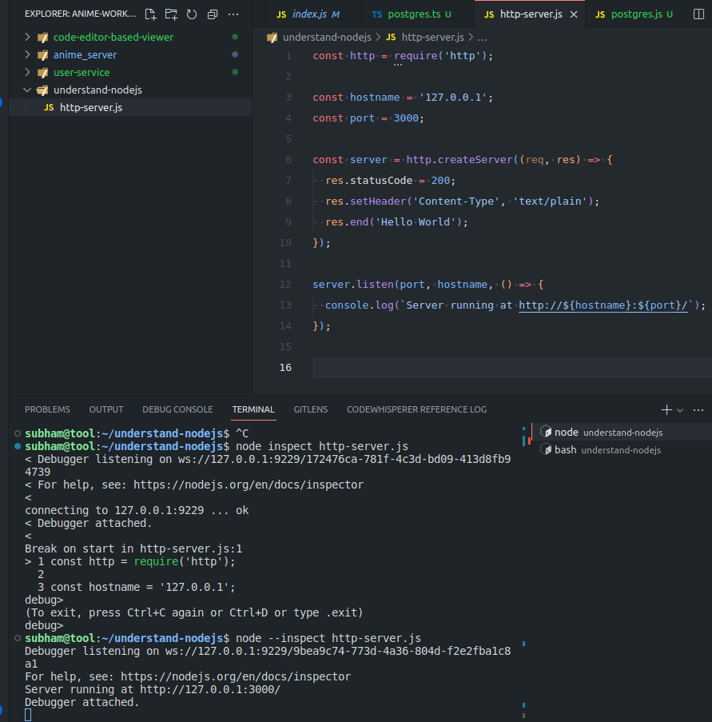
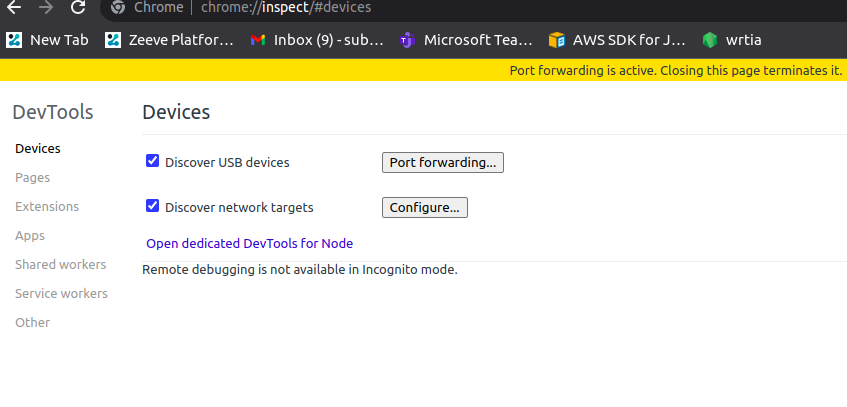
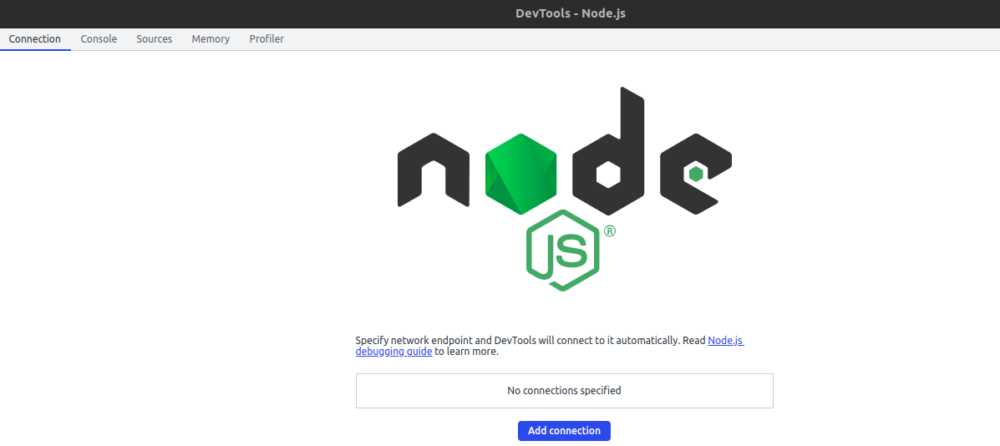
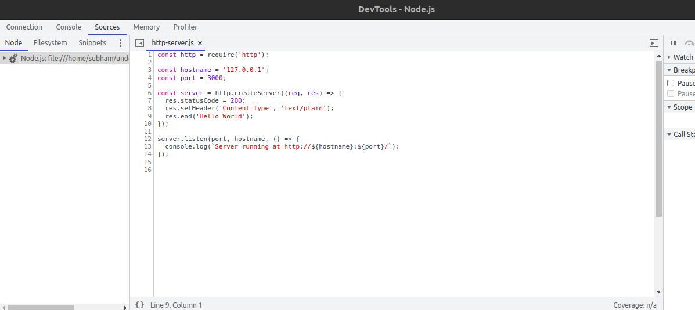
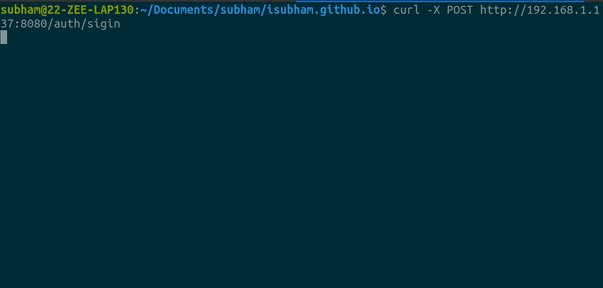
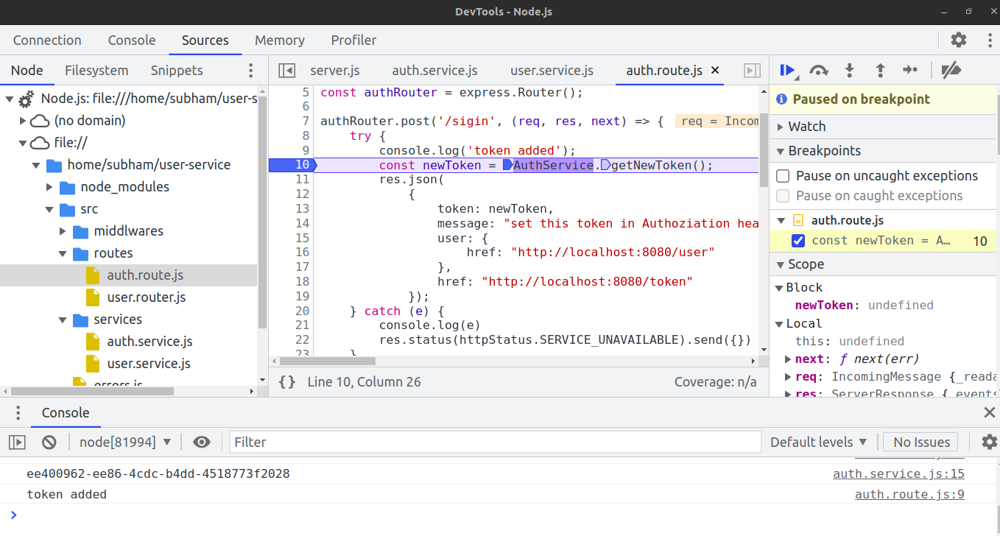

Table of Contents
Remote Debugging in Node
When we say remote debugging what we generally mean is checking at log messages, how system behave in a given input.
But after this article we will be able to do debugging as we do in our local environment and that can be helpful if we have some dependencies which are not available in our local machine, be it a cluster based like kubernetes when you dont have liberty to deploy every single app on your local machine or there was some case where you are not sure about the behaviour,
Lets get started.
Run server node process with –inpsect
So first thing we will have to do is run our node process with –inspect
node --inspect <script.js>
Node.js process will now listen to incoming debug clients. The debug clients here we generally have is vscode when we try to debug our apps during development.
The port on which it listens is 9229. So full url is ws://127.0.0.1:9229/9bea9c74-773d-4a36-804d-f2e2fba1c8a1
So let's run it in a project and assume it is server.

SSH Port forwarding from local to remote
Lets say we have a server details like subham@192.168.1.137. So ssh into that server with
ssh -L 9221:localhost:9229 subham@192.168.1.137
The 9229 is the same port that node.js process is listening on. So we forwarding 9221 of dev machine to 9229 or server.
Configure local port pointed to remote
open
chrome://inspect/#devices

Click on Open dedicated DevTools for Node

Click on add connection and add port of dev machine which is 9221. So that will be localhost:9221
Opening sources section will have the source code that we have in our server. 
Hit the Endpoint and Debug
Now to debug, we can fire request to that server and the debugger will be able to stop at that breakpoint.

and we have

To Dive Deeper, go to https://nodejs.org/en/docs/guides/debugging-getting-started